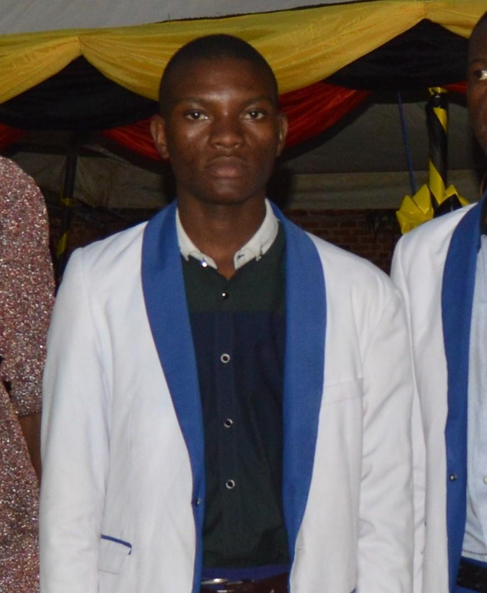

Kusasira Solomon
About Me

Hello! I'm Kusasira Solomon, an aspiring web developer with a passion for technology and creativity. I'm currently studying dynamic web fundamentals and enjoy learning how to build modern, user-friendly websites. I’m especially excited about using HTML, CSS, and JavaScript to bring ideas to life on the web.
Outside of coding, I love exploring new tools, collaborating with others, and constantly challenging myself to grow. My goal is to become a skilled developer who creates impactful and accessible digital experiences.
My Goals
My main goal is to become a skilled and confident front-end web developer. I want to master HTML, CSS, and JavaScript to build clean, responsive, and accessible websites that serve real-world needs.
In the near future, I plan to contribute to exciting web projects, collaborate with other developers, and keep learning new technologies like React and GitHub. Long-term, I hope to start my own freelance web development business and help others build their digital presence.
I believe that with consistent effort, creativity, and faith, I can achieve my dream of making a difference through technology.